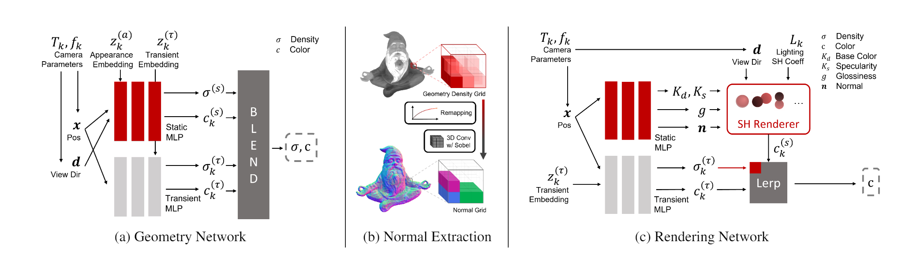

NeROIC: Neural Object Capture and Rendering from Online Image Collections
-
Zhengfei Kuang
University of Southern California -
Kyle Olszewski
Snap Inc. -
Menglei Chai
Snap Inc. -
Zeng Huang
Snap Inc. -
Sergey Tulyakov
Snap Inc.

Abstract
We present a novel method to acquire object representations from online image collections, capturing high-quality geometry and material properties of arbitrary objects from photographs with varying cameras, illumination, and backgrounds. This enables various object-centric rendering applications such as novel-view synthesis, relighting, and harmonized background composition from challenging in-the-wild input. Using a multi-stage approach extending neural radiance fields, we first infer the surface geometry and refine the coarsely estimated initial camera parameters, while leveraging coarse foreground object masks to improve the training efficiency and geometry quality. We also introduce a robust normal estimation technique which eliminates the effect of geometric noise while retaining crucial details. Lastly, we extract surface material properties and ambient illumination, represented in spherical harmonics with extensions that handle transient elements, \eg sharp shadows. The union of these components results in a highly modular and efficient object acquisition framework. Extensive evaluations and comparisons demonstrate the advantages of our approach in capturing high-quality geometry and appearance properties useful for rendering applications.
Video
Overview
Our two-stage model takes images of an object from different conditions as input. With the camera poses of images and object foreground masks acquired by other state-of-the-art methods, We first optimize the geometry of scanned object and refine camera poses by training a NeRF-based network; We then compute the surface normal from the geometry (represented by density function) using our normal extraction layer; Finally, our second stage model decomposes the material properties of the object and solves lighting condition of each image.
Novel View Synthesis
We compare our model with the First Order Motion Model (FOMM). Due to much improved motion representations our model shows substantially better results when articulated objects are animated. Our model generates impressive animations even when the poses of the source and the driving are significantly different. Each generated video has 384x384 resolution.
Material Decomposition
Relighting
Our model shows improvements on the MGif dataset. Local shape and identity details of each character
are better preserved compared with FOMM.
The website template was borrowed from Michaël Gharbi.